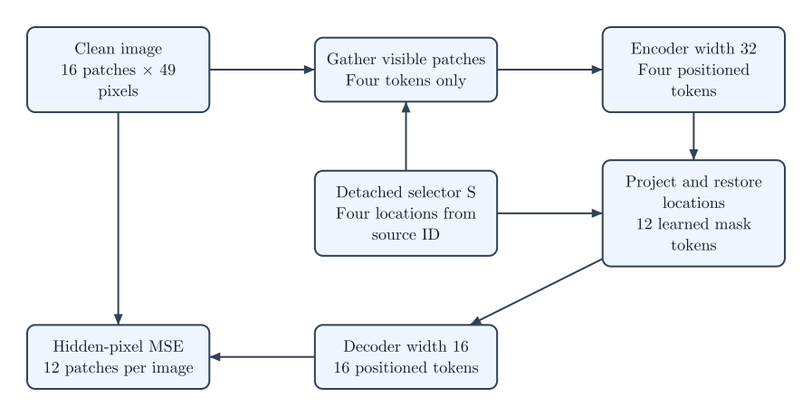
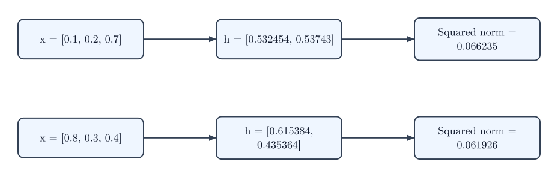
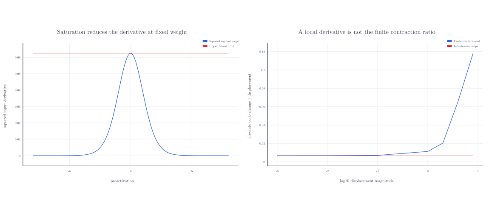
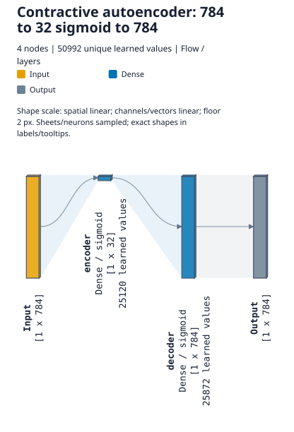
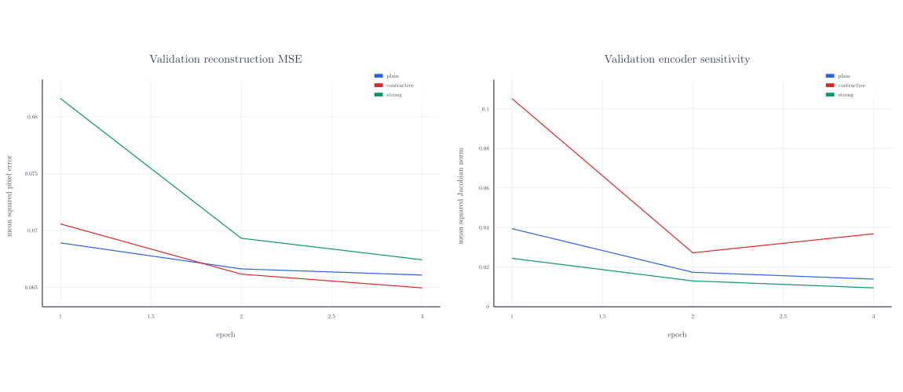
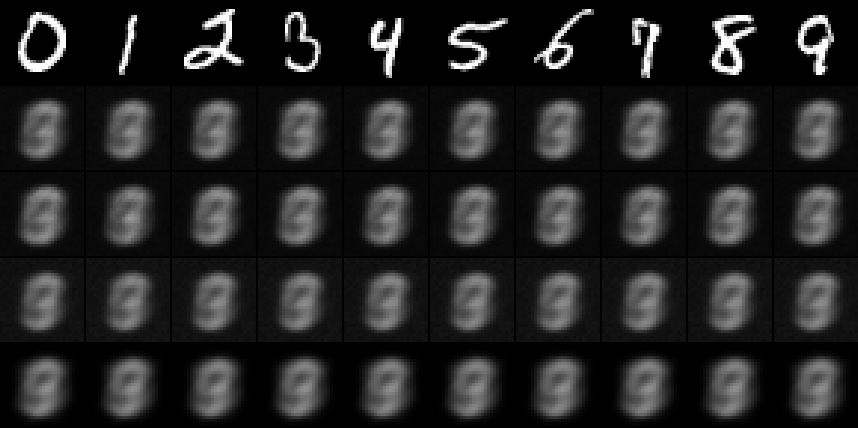

Contractive Autoencoders: What a Small Encoder Jacobian Means
Abstract
An encoder can reconstruct training observations yet change its representation sharply when its input moves. A contractive autoencoder penalizes that local sensitivity while learning to reconstruct the original input. This report derives the exact sigmoid-encoder Jacobian penalty and both of its parameter-gradient paths, checks them on a two-observation example, and contrasts infinitesimal sensitivity with finite changes. Three matched 784–32–784 networks then fit genuine MNIST with penalty coefficients 0, 0.01 and 0.1. Validation selects each network using its own objective; held-out reconstruction error, activation saturation, code variability and independently differentiated Jacobians qualify the resulting small derivatives. The migrated example uses independent encoder/decoder weights and mean squared reconstruction error. In these short runs, the strongest penalty yields the smallest encoder norm but worse reconstruction than the constant fitting-mean image; none of the measured quantities establishes semantic invariance.
The method
For an input row \(x\in\mathbb R^d\), let \(h=\sigma(xW+b)\in\mathbb R^k\) and \(\hat x=\sigma(hV+c)\), with independent \(W\in\mathbb R^{d\times k}\) and \(V\in\mathbb R^{k\times d}\). Both activations are logistic sigmoids. The objective averages the reconstruction error over examples and pixels, but sums the squared encoder derivatives over all input and code coordinates before averaging over examples:
#include <dm/dm.hpp>
int main() {
std::filesystem::create_directories("build");
dm::graphics::Diagram d(55, 1150);
d.node("x", {0, 0}, "Observed pixels x")
.node("h", {5, 0}, "Sigmoid code h")
.node("r", {10, 0}, "Sigmoid reconstruction")
.node("p", {2.5, -3}, "Encoder sensitivity\nMean squared Jacobian norm")
.node("m", {10, -3}, "Reconstruction MSE\nTarget is x")
.node("l", {6, -6}, "Loss = MSE + λ P")
.edge("x", "h", "Encoder W, b").edge("h", "r", "Decoder V, c")
.edge("h", "p", "Slopes and W").edge("r", "m")
.edge("p", "l", "lambda P").edge("m", "l", "MSE")
.text({5, 2}, "The penalty differentiates through both sigmoid slopes and encoder weights")
.save_svg("build/contractive_method.svg");
}
Write \(s_{nj}=h_{nj}(1-h_{nj})\) and \(q_j=\sum_iW_{ij}^2\). Since \(\partial h_j/\partial x_i=s_jW_{ij}\), the exact penalty is
Computing the column norms costs \(O(dk)\), and combining them with a batch of activations costs \(O(Nk)\). There is no need to allocate a full \(N\times k\times d\) Jacobian to train the model. The forward/reverse network cost remains \(O(Ndk)\), with parameters and activations requiring \(O(dk+N(d+k))\) storage. Full Jacobians are used below only as independent small-probe checks.
The gradient must include the direct dependence of \(q_j\) on \(W_{ij}\), as well as the dependence through \(h\). Applying the chain rule gives
Detaching the weight norms discards the first term. Detaching the activations discards the second.
The canonical dm::nn::models::SigmoidEncoderContraction preserves both paths and supports higher
parameter derivatives. ContractiveAutoencoder composes the two sigmoid layers with this penalty;
it does no optimization. It accepts overcomplete code widths too, although this study retains the
source example's smaller 32-dimensional code.
This is the source example's untied-weight, pixel-MSE variant of the penalty introduced by [Rifai et al. (2011)](https://icml.cc/Conferences/2011/papers/455_icmlpaper.pdf). Their reported experiments use tied weights and cross-entropy reconstruction. Neither their classification results nor their hyperparameter choices are being reproduced here. With independent weights, an encoder and decoder can compensate for changes in representation scale; a small encoder derivative alone therefore does not establish a useful representation.
Two observations, with all derivatives checked
Use \(X=((0.1,0.2,0.7),(0.8,0.3,0.4))\), \(W=((0.3,-0.4),(0.7,0.2),(-0.2,0.5))\), and \(b=(0.1,-0.2)\). The weight-column squared norms are 0.62 and 0.45. For the first observation the logits are \((0.13,0.15)\); for the second they are \((0.47,-0.26)\). These four sigmoids determine all 12 Jacobian entries and the two per-observation penalties.
#include <dm/dm.hpp>
int main() {
namespace n = dm::nn;
const auto type = n::DType::Float64;
const auto x = n::tensor({.1, .2, .7, .8, .3, .4}, {2, 3}, type).requires_grad_();
const auto w = n::tensor({.3, -.4, .7, .2, -.2, .5}, {3, 2}, type).requires_grad_();
const auto b = n::tensor({.1, -.2}, {2}, type).requires_grad_();
const auto h = n::sigmoid(n::matmul(x, w) + b);
const auto penalty = n::models::SigmoidEncoderContraction(h, w);
n::GradOptions keep;
keep.retain_graph = true;
const auto gradient = n::grad(penalty.mean, {w, b}, keep);
std::vector<n::Tensor> rows;
for (int j = 0; j < 2; ++j)
rows.push_back(n::grad(n::sum(n::slice_axis(h, 1, j, j + 1)), {x}, keep)[0]);
const auto jacobian = n::stack(rows, 1);
const auto independent = n::sum(n::square(jacobian), {1, 2});
const auto slope2 = n::square(h * (1. - h));
const auto delta = slope2 * (1. - 2. * h) * n::sum(n::square(w), {0});
const auto dw = n::matmul(n::transpose(x), delta) + w * n::sum(slope2, {0});
const auto db = n::sum(delta, {0}); // 2/N = 1 for this batch.
const double error = n::max(n::abs(independent - penalty.per_example)).item();
if (error > 1e-13 || n::max(n::abs(dw - gradient[0])).item() > 1e-13 ||
n::max(n::abs(db - gradient[1])).item() > 1e-13) return 1;
std::print("| observation | code | all encoder derivatives | exact squared norm | autodiff squared norm |\n|---:|---|---|---:|---:|\n");
for (int i = 0; i < 2; ++i)
std::print("| {} | {} | {} | {:.10f} | {:.10f} |\n", i,
n::select(h, 0, i).values_str(), n::select(jacobian, 0, i).values_str(),
penalty.per_example.at({i}), independent.at({i}));
std::print("\nMean penalty: {:.10f}. All six weight derivatives: {}. Both bias derivatives: {}.\n",
penalty.mean.item(), gradient[0].values_str(), gradient[1].values_str());
const n::TensorFunction objective = [](const auto& in) {
return n::models::SigmoidEncoderContraction(n::sigmoid(n::matmul(in[0], in[1]) + in[2]), in[1]).mean;
};
const auto first = n::gradcheck(objective, {x, w, b}, {.atol = 1e-8, .rtol = 1e-6});
const auto second = n::gradgradcheck(objective, {x, w, b}, {.atol = 1e-8, .rtol = 1e-6});
if (!first.ok || !second.ok) return 1;
std::print("\nFirst derivative finite-difference error {:.2e}; second derivative error {:.2e}.\n", first.max_abs_error, second.max_abs_error);
std::filesystem::create_directories("build");
dm::graphics::Diagram d(55, 1150);
for (int i = 0; i < 2; ++i) {
const auto suffix = std::to_string(i);
const double y = -3. * i;
d.node("x" + suffix, {0, y}, "x = " + n::select(x, 0, i).values_str())
.node("h" + suffix, {6, y}, "h = " + n::select(h, 0, i).values_str())
.node("p" + suffix, {12, y}, std::format("Squared norm = {:.6f}", independent.at({i})))
.edge("x" + suffix, "h" + suffix).edge("h" + suffix, "p" + suffix);
}
d.save_svg("build/contractive_toy.svg");
}| observation | code | all encoder derivatives | exact squared norm | autodiff squared norm |
|---|---|---|---|---|
| 0 | [0.532454, 0.53743] | [[0.074684, 0.174263, -0.0497893], [-0.0994396, 0.0497198, 0.1243]] | 0.0662348302 | 0.0662348302 |
| 1 | [0.615384, 0.435364] | [[0.071006, 0.165681, -0.0473373], [-0.0983289, 0.0491644, 0.122911]] | 0.0619255738 | 0.0619255738 |
Mean penalty: 0.0640802020. All six weight derivatives: [[0.0287369, -0.046288], [0.0796931, 0.0250842], [-0.0285509, 0.0610638]]. Both bias derivatives: [-0.0105092, 0.00143339].
First derivative finite-difference error 9.63e-12; second derivative error 1.96e-11.

Checking what contraction does and does not promise
For a sigmoid, \(0\le s\le1/4\), hence \(0\le\|J_h(x)\|_F^2\le\|W\|_F^2/16\). Small weights reduce this bound, but saturation also makes the actual derivative small even when the weights are unchanged. An encoder with all weights zero has zero penalty and a constant code; its best decoder output under MSE is only a constant image. Sensitivity must be interpreted alongside reconstruction and code variability.
For a perturbation \(\delta\), \(h(x+\delta)-h(x)=J_h(x)\delta+O(\|\delta\|^2)\). The penalty controls this first-order term, not arbitrary finite displacements. In one dimension, \(h(x)=\sigma(x)\) has a small slope at \(x=5\), yet moving eight units towards the negative side crosses its transition region. This fixed-function example has no fitted parameters.
#include <dm/dm.hpp>
int main() {
namespace n = dm::nn;
n::NoGradGuard guard;
const auto type = n::DType::Float64;
const auto z = n::linspace(-8, 8, 161, type).reshape({161, 1});
const auto code = n::sigmoid(z);
const auto p = n::models::SigmoidEncoderContraction(code, n::ones({1, 1}, type));
if (n::max(p.per_example).item() > 1. / 16 + 1e-14) return 1;
auto left = dm::graphics::RPlot::create();
left.lines(z.to_vector<double>(), p.per_example.to_vector<double>(), "Squared sigmoid slope", {37, 99, 235}, 2.)
.lines({-8, 8}, {1. / 16, 1. / 16}, "Upper bound 1/16", {220, 38, 38}, 1.)
.x_label("preactivation").y_label("squared input derivative").title("Saturation reduces the derivative at fixed weight");
const double local = n::sigmoid(n::scalar(5., type)).item() * (1. - n::sigmoid(n::scalar(5., type)).item());
std::vector<double> logs, ratios;
std::print("| displacement towards negative x | finite contraction ratio | local slope at x=5 |\n|---:|---:|---:|\n");
for (double epsilon : {.001, .01, .1, 1., 2., 4., 8.}) {
const double ratio = (n::sigmoid(n::scalar(5., type)) - n::sigmoid(n::scalar(5. - epsilon, type))).item() / epsilon;
logs.push_back(std::log10(epsilon));
ratios.push_back(ratio);
std::print("| {:.3f} | {:.7f} | {:.7f} |\n", epsilon, ratio, local);
}
auto right = dm::graphics::RPlot::create();
right.lines(logs, ratios, "Finite displacement", {37, 99, 235}, 2.)
.lines({logs.front(), logs.back()}, {local, local}, "Infinitesimal slope", {220, 38, 38}, 1.)
.x_label("log10 displacement magnitude").y_label("absolute code change / displacement")
.title("A local derivative is not the finite contraction ratio");
std::filesystem::create_directories("build");
auto figure = dm::graphics::RLayout::create(1, 2);
figure.add(left).add(right).size(1150, 500).save_svg("build/contractive_sensitivity.svg");
}| displacement towards negative x | finite contraction ratio | local slope at x=5 |
|---|---|---|
| 0.001 | 0.0066513 | 0.0066481 |
| 0.010 | 0.0066810 | 0.0066481 |
| 0.100 | 0.0069869 | 0.0066481 |
| 1.000 | 0.0112934 | 0.0066481 |
| 2.000 | 0.0203665 | 0.0066481 |
| 4.000 | 0.0655621 | 0.0066481 |
| 8.000 | 0.1182352 | 0.0066481 |

The network actually fitted
The following single-row shape probe executes the full 784–32–784 sigmoid network. Flow style and layer detail are explicit. This is a reconstruction-path diagram; the preceding method figure shows the additional scalar penalty branch. Its 50,992 learned scalars have the same names and layout as the original source. Spatial and channel/vector shape scales are linear, with a two-pixel visibility floor and at most six sampled shape planes. The flow glyphs aggregate whole tensors; they do not depict 784 individual pixels. Exact tensor shapes remain in labels and tooltips.
#include <dm/dm.hpp>
int main() {
namespace n = dm::nn;
n::ParameterStore p(1753);
n::Module model([&](const n::Tensor& input) {
return n::models::ContractiveAutoencoder(p, input, .01).reconstruction;
}, "Contractive autoencoder: 784 to 32 sigmoid to 784");
n::ModelPlotOptions options;
options.style = n::ModelPlotStyle::Flow;
options.detail = n::ModelPlotDetail::Layers;
options.sizing.spatial_scale = n::ModelPlotScale::Linear;
options.sizing.channel_scale = n::ModelPlotScale::Linear;
options.sizing.minimum_extent = 2;
options.sizing.max_planes = 6;
const auto figure = model.plot(n::zeros({1, 784}), options);
if (p.count() != 50992 || figure.parameter_count() != p.count()) return 1;
std::filesystem::create_directories("build");
figure.save_svg("build/contractive_architecture.svg");
std::print("{} learned tensors, {} learned scalars.\n", p.size(), p.count());
}4 learned tensors, 50992 learned scalars.

Three matched genuine-MNIST fits
The native dataset API prepares the same disjoint original-MNIST pools used by the
[undercomplete autoencoder](undercomplete_autoencoder.mepml): 1,000 fitting, 200 validation and
200 official test images, balanced across digit classes. LoadSaliency validates original row IDs,
byte ranges, class counts and distinct pixel records. All pixels are Float32 byte values divided by
- No class labels enter the loss, gradients or checkpoint selection.
The three coefficients preserve the source's Float32 constants: 0, double(0.01f) and double(0.1f).
All variants use seed 1753 for initialization, seed 1759 for batch order, Adam at learning rate 0.003,
minibatches of 32 with the final short batch retained, and three epochs. Each variant selects its
checkpoint by its own full validation objective MSE + lambda P. Those objective values have
different penalty weights, so they are not a common-MSE ranking. The penalty diagnostic remains
computed for the zero-weight control. These are short fits on small pools, not the paper's benchmark.
#include <dm/dm.hpp>
int main() {
namespace n = dm::nn;
namespace m = n::models;
std::filesystem::create_directories("build");
const std::filesystem::path cache = dm::datasets::data_home();
dm::datasets::prepare_example_data("mnist-assets", cache.string());
const auto pools = m::LoadSaliency(cache / "saliency");
const auto fit = pools[0].images.reshape({1000, 784});
const auto validation = pools[1].images.reshape({200, 784});
const auto test = pools[2].images.reshape({200, 784});
const auto fit_mean = n::mean(fit, {0}, true);
struct Variant { const char* name; double weight; dm::graphics::RGB color; };
const std::vector<Variant> variants{{"plain", 0., {37, 99, 235}},
{"contractive", double(.01f), {220, 38, 38}}, {"strong", double(.1f), {5, 150, 105}}};
auto mse_plot = dm::graphics::RPlot::create();
auto norm_plot = dm::graphics::RPlot::create();
n::NamedTensors saved{{"fit_ids", pools[0].source}, {"validation_ids", pools[1].source},
{"test_ids", pools[2].source}, {"test_labels", pools[2].labels}, {"test_input", test}, {"pixel_mean", fit_mean}};
std::vector<std::string> summary;
std::vector<std::string> jacobian_checks;
std::print("| variant | epoch | fitting pre-update objective | validation objective | validation MSE | validation squared Jacobian norm |\n|---|---:|---:|---:|---:|---:|\n");
for (const auto& variant : variants) {
const auto prefix = std::string("build/contractive_") + variant.name;
n::ParameterStore parameters(1753);
{
n::NoGradGuard guard;
m::ContractiveAutoencoder(parameters, n::zeros({1, 784}), variant.weight);
parameters.save(prefix + "_initial.npz");
if (std::string(variant.name) != "plain") {
const auto base = n::load_npz("build/contractive_plain_initial.npz");
for (const auto& [name, value] : base)
if (!n::equal_bits(value, parameters.at(name))) return 1;
}
}
n::OptimizerConfig config;
config.kind = n::OptimizerKind::Adam;
n::Optimizer optimizer(parameters, .003, config);
n::BatchOrder order(1000, 32, 1759);
double best = std::numeric_limits<double>::infinity();
int selected = 0, updates = 0;
std::vector<double> epochs, mses, norms;
for (int epoch = 1; epoch <= 3; ++epoch) {
order.begin_epoch();
std::size_t seen = 0;
double sum = 0;
for (;;) {
const auto rows = order.next();
if (rows.empty()) break;
const auto input = n::take_rows(fit, rows);
const auto output = m::ContractiveAutoencoder(parameters, input, variant.weight);
if (updates == 0) {
n::GradOptions keep;
keep.retain_graph = true;
const auto gradients = n::grad(output.loss, parameters.parameters(), keep);
n::NamedTensors first{{"input", input}, {"weight", n::scalar(variant.weight, n::DType::Float64)}};
for (std::size_t i = 0; i < gradients.size(); ++i) {
const double norm = n::sqrt(n::sum(n::square(gradients[i]))).item();
if (!std::isfinite(norm) || norm <= 0) return 1;
first.emplace_back(parameters.names()[i], gradients[i]);
}
n::save_npz(prefix + "_first_gradients.npz", first);
}
const double value = output.loss.item();
if (!std::isfinite(value) || value < 0) return 1;
sum += value * rows.size();
seen += rows.size();
optimizer.minimize(output.loss);
if (updates == 0) parameters.save(prefix + "_first_update.npz");
++updates;
}
n::NoGradGuard guard;
const auto result = m::ContractiveAutoencoder(parameters, validation, variant.weight);
const double objective = result.loss.item();
if (seen != 1000 || !std::isfinite(objective)) return 1;
if (objective < best) {
best = objective;
selected = epoch;
parameters.save(prefix + "_best.npz");
}
epochs.push_back(epoch);
mses.push_back(result.mse.item());
norms.push_back(result.penalty.mean.item());
std::print("| {} | {} | {:.9f} | {:.9f} | {:.9f} | {:.9f} |\n", variant.name, epoch, sum / seen,
objective, result.mse.item(), result.penalty.mean.item());
}
if (updates != 96) return 1;
n::ParameterStore deployed(1753);
{ n::NoGradGuard guard; m::ContractiveAutoencoder(deployed, n::zeros({1, 784}), variant.weight); }
deployed.load(prefix + "_best.npz");
{
n::NoGradGuard guard;
const auto selected_validation = m::ContractiveAutoencoder(deployed, validation, variant.weight);
if (std::abs(selected_validation.loss.item() - best) > 2e-7) return 1;
const auto result = m::ContractiveAutoencoder(deployed, test, variant.weight);
const auto saturation = n::cast(n::logical_or(n::less(result.code, .01), n::greater(result.code, .99)), n::DType::Float64);
const auto code_mean = n::mean(result.code, {0}, true);
const double code_std = n::mean(n::sqrt(n::mean(n::square(result.code - code_mean), {0}))).item();
summary.push_back(std::format("| {} | {} | {:.9f} | {:.9f} | {:.6f} | {:.6f} |", variant.name, selected,
result.mse.item(), result.penalty.mean.item(), n::mean(saturation).item(), code_std));
saved.emplace_back(std::string(variant.name) + "_code", result.code);
saved.emplace_back(std::string(variant.name) + "_reconstruction", result.reconstruction);
saved.emplace_back(std::string(variant.name) + "_penalty", result.penalty.per_example);
saved.emplace_back(std::string(variant.name) + "_weight", n::scalar(variant.weight, n::DType::Float64));
saved.emplace_back(std::string(variant.name) + "_validation_mse", n::from_vector(mses, {3}));
saved.emplace_back(std::string(variant.name) + "_validation_penalty", n::from_vector(norms, {3}));
}
const auto probe = n::take_rows(test, {0, 1, 2, 3, 4, 5, 6, 7}).detach().requires_grad_();
const auto code = n::dense(deployed, "encoder", probe, 32, n::Activation::Sigmoid);
n::GradOptions keep;
keep.retain_graph = true;
std::vector<n::Tensor> derivatives;
for (int j = 0; j < 32; ++j)
derivatives.push_back(n::grad(n::sum(n::slice_axis(code, 1, j, j + 1)), {probe}, keep)[0]);
const auto jacobian = n::stack(derivatives, 1);
const auto reference = n::sum(n::square(jacobian), {1, 2});
const auto analytic = m::SigmoidEncoderContraction(code, deployed.at("encoder/W")).per_example;
const double maximum_error = n::max(n::abs(reference - analytic)).item();
if (maximum_error > 2e-5) return 1;
saved.emplace_back(std::string(variant.name) + "_probe_jacobian", jacobian);
saved.emplace_back(std::string(variant.name) + "_probe_input", probe.detach());
jacobian_checks.push_back(std::format("{}: full 8-by-32-by-784 reverse-mode Jacobian norm maximum error {:.2e}.", variant.name, maximum_error));
mse_plot.lines(epochs, mses, variant.name, variant.color, 2.);
norm_plot.lines(epochs, norms, variant.name, variant.color, 2.);
}
for (const auto& check : jacobian_checks) std::print("\n{}\n", check);
std::print("\n| selected variant | selected epoch | held-out MSE | held-out squared Jacobian norm | saturated fraction outside [0.01,0.99] | mean code-coordinate std |\n|---|---:|---:|---:|---:|---:|\n");
for (const auto& row : summary) std::print("{}\n", row);
std::print("\nHeld-out MSE of fitting-only pixel mean: {:.9f}.\n", n::mse(n::broadcast_to(fit_mean, test.shape()), test).item());
n::save_npz("build/contractive_results.npz", saved);
mse_plot.title("Validation reconstruction MSE").x_label("epoch").y_label("mean squared pixel error");
norm_plot.title("Validation encoder sensitivity").x_label("epoch").y_label("mean squared Jacobian norm");
auto figure = dm::graphics::RLayout::create(1, 2);
figure.add(mse_plot).add(norm_plot).size(1150, 500).save_svg("build/contractive_learning.svg");
}| variant | epoch | fitting pre-update objective | validation objective | validation MSE | validation squared Jacobian norm |
|---|---|---|---|---|---|
| plain | 1 | 0.117632354 | 0.068901576 | 0.068901576 | 0.039363019 |
| plain | 2 | 0.070248771 | 0.066614062 | 0.066614062 | 0.017289743 |
| plain | 3 | 0.069451911 | 0.066071436 | 0.066071436 | 0.013840304 |
| contractive | 1 | 0.138135876 | 0.071626402 | 0.070574157 | 0.105224788 |
| contractive | 2 | 0.070951631 | 0.066423722 | 0.066151895 | 0.027182393 |
| contractive | 3 | 0.069007923 | 0.065312520 | 0.064944655 | 0.036786627 |
| strong | 1 | 0.198919676 | 0.084044568 | 0.081607237 | 0.024373300 |
| strong | 2 | 0.077976666 | 0.070602410 | 0.069309287 | 0.012931257 |
| strong | 3 | 0.072393381 | 0.068357192 | 0.067415573 | 0.009416176 |
plain: full 8-by-32-by-784 reverse-mode Jacobian norm maximum error 1.46e-11.
contractive: full 8-by-32-by-784 reverse-mode Jacobian norm maximum error 4.66e-10.
strong: full 8-by-32-by-784 reverse-mode Jacobian norm maximum error 2.27e-13.
| selected variant | selected epoch | held-out MSE | held-out squared Jacobian norm | saturated fraction outside [0.01,0.99] | mean code-coordinate std |
|---|---|---|---|---|---|
| plain | 3 | 0.068505332 | 0.013150861 | 0.866875 | 0.009845 |
| contractive | 3 | 0.067361541 | 0.034033548 | 0.735625 | 0.028604 |
| strong | 3 | 0.069753237 | 0.007271181 | 0.829531 | 0.010410 |
Held-out MSE of fitting-only pixel mean: 0.067798078.

The full probe computes 602,112 derivative entries across the three selected networks. It checks the analytic norm against reverse-mode derivatives of the actual encoder, with one backward pass per code coordinate. The retained first-minibatch gradients and post-update parameters additionally support an independent scalar-chain-rule and Adam-step check. The test pool is evaluated after checkpoint selection.
All three variants select epoch 3. The strong penalty reduces the held-out squared encoder norm from the plain model's 0.01315 to 0.00727, but its MSE is 0.06975, worse than both the plain model (0.06851) and the fitting-mean image (0.06780). The moderate penalty gives MSE 0.06736 and a larger code-coordinate standard deviation, 0.02860 versus 0.00985 for the plain network, yet its encoder norm is also larger, 0.03403. Its observed MSE advantage over the constant baseline is small and comes from one seed and split. These finite-step fits do not establish monotonic control of the held-out Jacobian by lambda. Saturated fractions of 0.736–0.867 and the gallery below show why small derivatives alone would be an incomplete description of these networks.
Reconstructions and code dependence
The gallery keeps the first held-out occurrence of each digit, ordered 0 through 9. Original inputs, plain reconstructions, lambda 0.01 reconstructions, lambda 0.1 reconstructions and the fitting-only pixel mean use identical grayscale limits and integer enlargement. No image is chosen by reconstruction quality. The label is used only for this presentation order.
#include <dm/dm.hpp>
int main() {
namespace n = dm::nn;
std::map<std::string, n::Tensor> a;
for (const auto& [name, value] : n::load_npz("build/contractive_results.npz")) a.emplace(name, value);
const auto labels = a.at("test_labels").to_vector<int>();
std::vector<std::int64_t> rows;
for (int digit = 0; digit < 10; ++digit) {
const auto found = std::find(labels.begin(), labels.end(), digit);
if (found == labels.end()) return 1;
rows.push_back(found - labels.begin());
}
std::vector<n::Tensor> panels;
for (const auto name : {"test_input", "plain_reconstruction", "contractive_reconstruction", "strong_reconstruction"})
panels.push_back(n::take_rows(a.at(name), rows));
panels.push_back(n::broadcast_to(a.at("pixel_mean"), {10, 784}));
n::save_image_grid(n::concat(panels, 0).reshape({50, 28, 28, 1}), "build/contractive_reconstructions.png", 10, 0, 1, 2, 0, 3);
std::print("Rows: originals, plain, lambda 0.01, lambda 0.1, fitting pixel mean. Columns: digits zero through nine.\n");
}Rows: originals, plain, lambda 0.01, lambda 0.1, fitting pixel mean. Columns: digits zero through nine.

Conclusion
The exact sigmoid penalty can be trained without constructing a full Jacobian, and both its direct weight derivative and its activation-slope derivative matter. Saturation can reduce sensitivity without learning useful distinctions; finite changes can also cross a transition region despite a small local slope. The matched short MNIST fits therefore report MSE, code variability and saturation alongside encoder derivatives. No classifier, semantic invariance, finite-perturbation robustness guarantee, disentanglement or bit-rate compression result follows from these measurements.
References
- Rifai, S., Vincent, P., Muller, X., Glorot, X. and Bengio, Y. (2011). [Contractive Auto-Encoders: Explicit Invariance During Feature Extraction](https://icml.cc/Conferences/2011/papers/455_icmlpaper.pdf). Proceedings of ICML, pp. 833–840. The exact encoder-Jacobian penalty is used here with the migrated source's MSE and independent weights.
- LeCun, Y., Bottou, L., Bengio, Y. and Haffner, P. (1998). [Gradient-based learning applied to document recognition](https://doi.org/10.1109/5.726791). Proceedings of the IEEE 86(11), pp. 2278–2324.